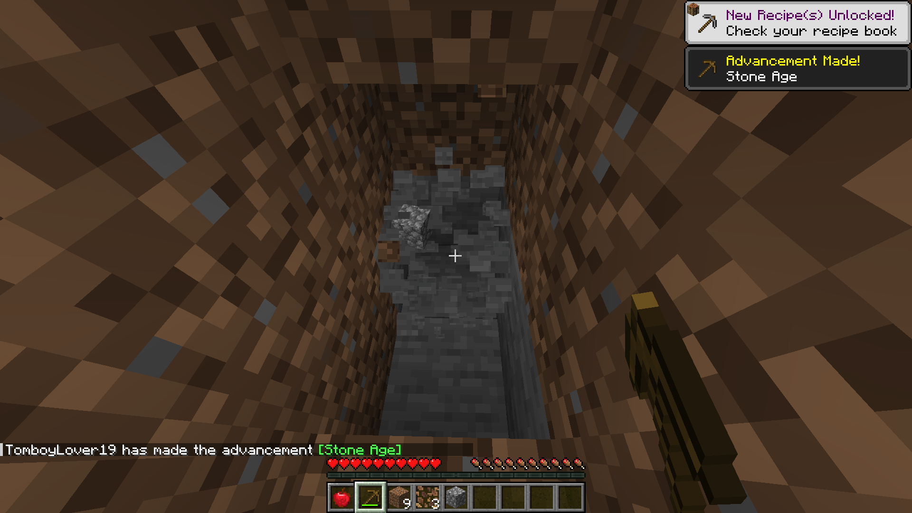

A Beginner's Guide to Finding and Using Iron

Iron is one of the first materials that makes exploration feel much safer. A little preparation before digging helps you bring the ore home instead of losing it to a fall, a mob, or a full inventory.
Pack for a short trip
Bring a stone pickaxe or better, several torches, food, and enough blocks to bridge gaps or mark a route. Keep a spare pickaxe if you can. Leave valuables you do not need at home, and bring a few empty inventory slots for ore and other finds. A shield is useful protection when hostile mobs appear in a tunnel.
Mine with an exit in mind
Use a cave entrance or a staircase you can climb back up. Light the path as you explore and place torches consistently on one side of the tunnel; on the return trip, follow the opposite side. Avoid digging straight down or straight up, since either can open into a dangerous drop or hidden lava. If the cave branches, mark the branch you came from before exploring another.
Smelt and spend your first iron wisely
Mine iron ore with a stone pickaxe or better, then smelt it in a furnace using a fuel source. Your priorities depend on what you already have: a shield and iron pickaxe help with exploration, while a bucket makes water and lava easier to manage. Upgrade armor when you have enough ingots to make a meaningful improvement. Save a few ingots for repairs and future tools rather than spending every piece at once.
- Pack a suitable pickaxe, torches, food, and spare inventory space.
- Mark a clear route back to the surface.
- Smelt ore and choose the upgrade that solves your biggest risk.